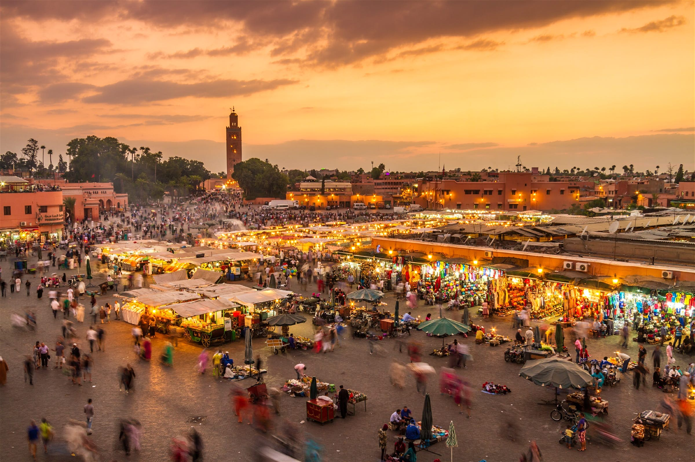
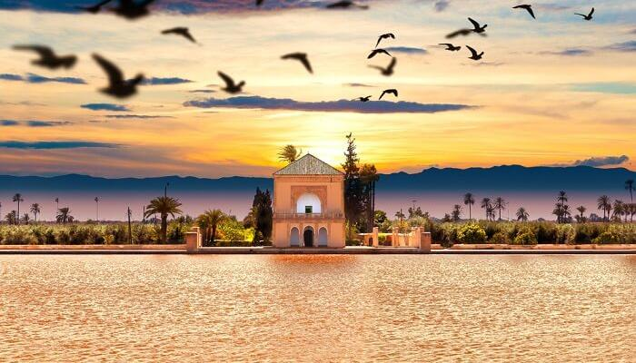
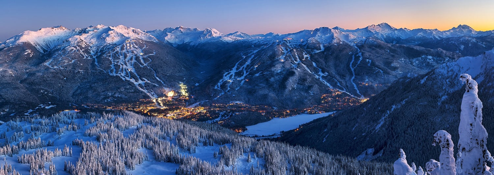
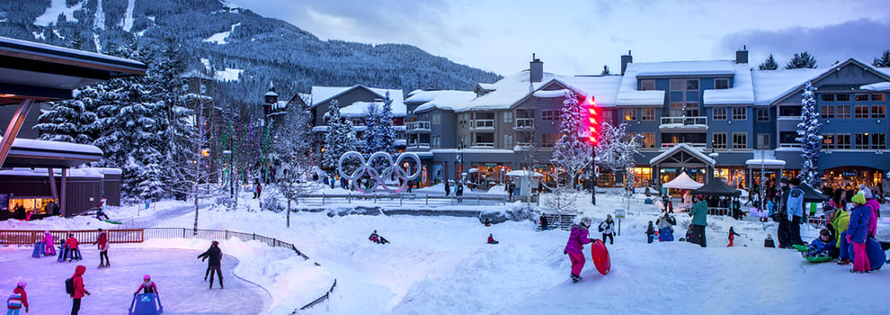
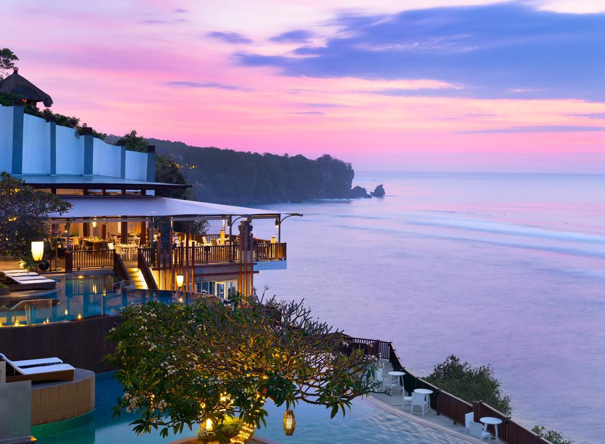
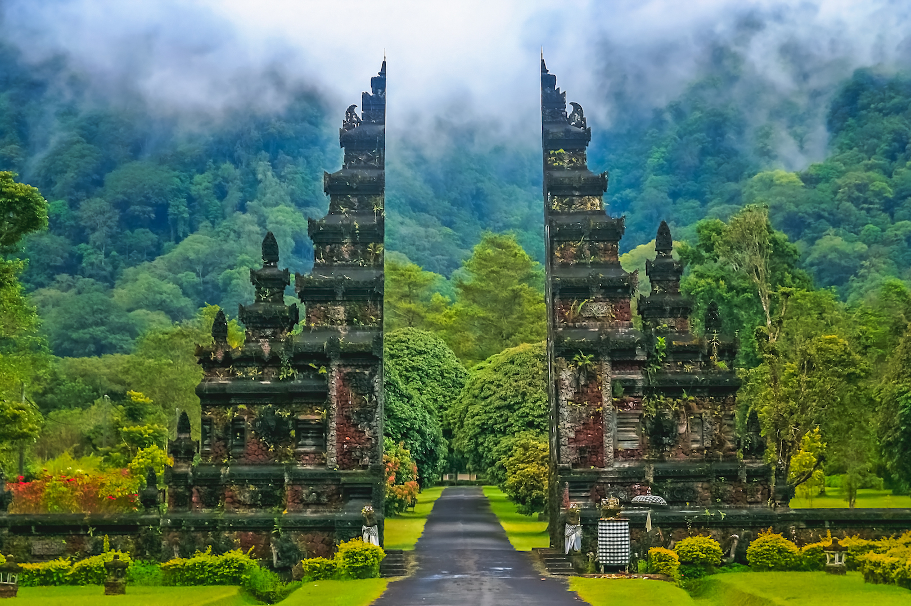

"I choose to collect memories instead of things."
1. Marrakech
Where: Marocco, North Africa
When: March to May
If you want to experience the best of the Middle East without the noisy crowds, then you should get to Marrakech in Morocco which has been deemed one of the best summer destinations for all kinds of travelers. Famed for its unique mix of cultural diversity, this city has everything to make your summer vacation a memorable affair. You can choose to wander around the area of Jemma el-Fna, shop in colorful souks, and learn Morocco’s enchanting history in palaces and museums among other things.


2. Whistler
Where: British Columbia, Canada, North America
When: June to August
Located in the Coast Mountains, Whistler in Canada also makes as one of the great summer holiday destinations. You can get there if you fly to Vancouver International Airport and then take a bus or taxi to get to Whistler. With so many intriguing experiences like exploring the hiking trails, going on a bear tour, and more, taking a trip to this town means witnessing the shining gem of Canada all at once. Make sure to visit the Whistler Blackcomb,the Garibaldi Provincial Park and last but not least, the Whistler Olympic Park for some unforgettable skiing experience.


3. Bali
Where: Indonesia, Asia
When: May to July
The backpacker’s paradise and honeymooner’s heaven, Bali is a perfect blend of mountains, volcanoes, temples, reefs, and beaches that makes it one of the must places to go in the summer season. Offering post-card like views of the sunset, Bali is also famous for nightlife, shopping, and its yoga retreats. The charming culture, the night shows, the picturesque islands, and the awesome food are enough to make you believe that it’s one of the best summer holiday destinations in the world.

